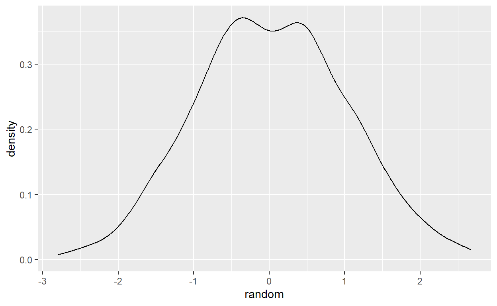
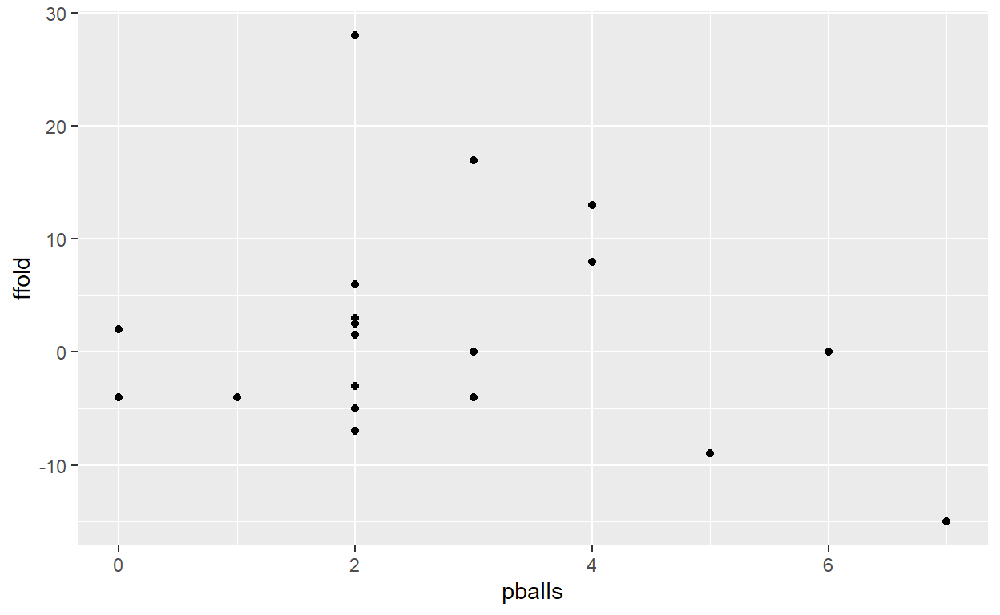
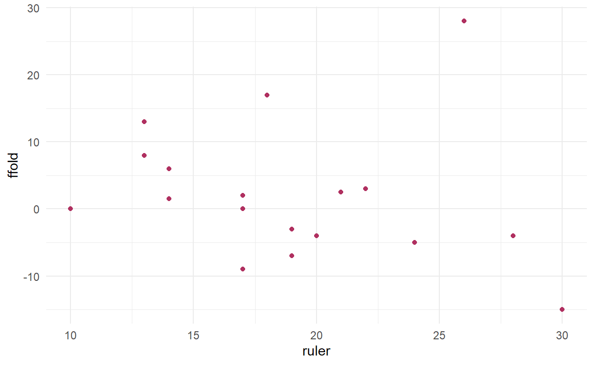
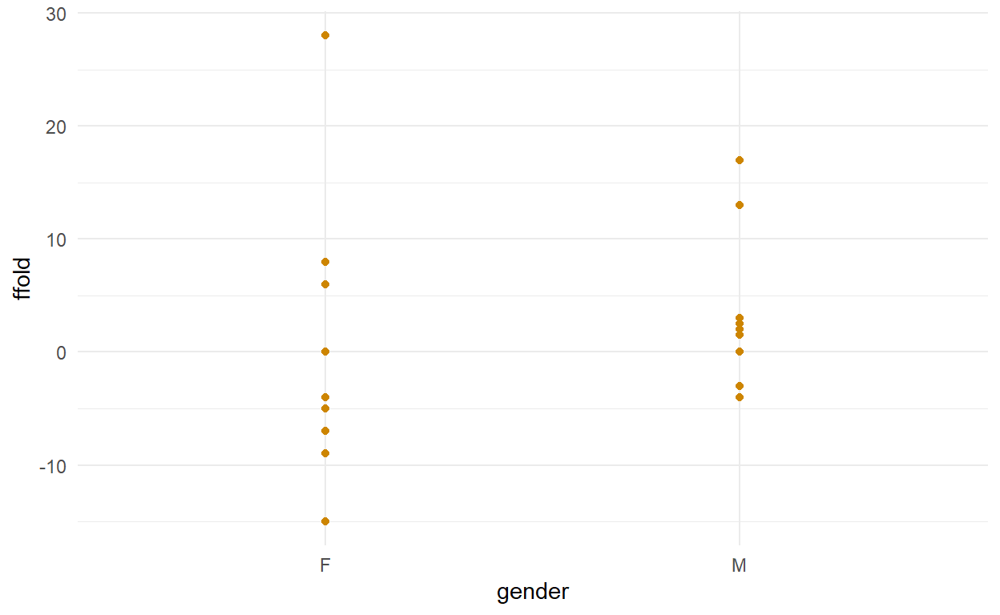
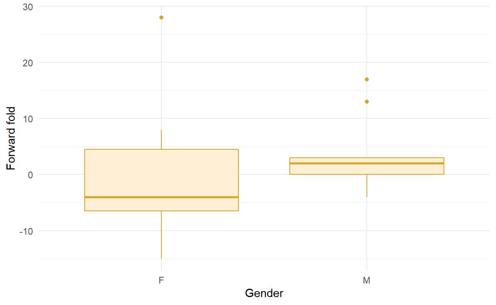

Introduction
Welcome to Data Skills for the Life Sciences!
This page contains important information on the module: it’s worth reading through carefully, and the information will always be here for you to refer back to. The first few sections describe everything you need to know to set yourself up for the course. It’s really important you complete these as soon as possible.
We’ll cover:
- This book and its content
RCode, includingR- RStudio
- R packages
- Picture and Video
- Interactive Elements
- Quizzes
- Exercises
- Completing each Chapter
- Other resources
- Books
- Cheatsheets
- ShinyGLM
- Forums
- Collaboration
- The analytical process which will underpin how we learn to analyse data
- Finally, a walkthrough to install
Rand RStudio.
Click the button below to continue.
\(~\)
This book
First, some information on this web book.
The book accompanies every student for the first 9 weeks of the module, after which the teaching and content start to diverge for different programmes. This divergence allows programmes to learn analytical techniques which are relevant to their courses: some stay with content in this book, and some do not.
Here’s a quick video tutorial on the layout of this book, and how it functions.
CONTENT TYPES
Within the book you will find a diversity of content, which we’ll go through in the next sections.
R CODE
We are learning how to visualise, manage and analyse data in R. R is a programming language, and people who use it are variously called “programmers”, “coders” or “developers”.
Why R?
You may have come across other programs that allow you to work with data, plot data and run statistical analyses. So why a programming language, and why R?
WHAT IS R?
Think of R as a language you’re writing in. “Running” R code from within a file allows you to communicate with the computer and instruct it to do something, resulting in outputs like plots or data.
WHAT ARE THE BENEFITS OF USING R?
There are a huge number of benefits to using R, listed here and elaborated on in the video below.
- It’s free.
- It’s open source.
- It’s cross-platform.
- It’s transparent and replicable.
- It’s powerful and fast.
- It’s flexible.
- It makes you employable.
WHAT IS RSTUDIO?
We will be working with R in a program called RStudio; think of this like R’s Microsoft Word; i.e. a program that allows you to create, save and open R code files; to edit those files and write R code. RStudio enables you to run R code, and get whatever output you need, whether it’s a calculation, a subset of data, or a graph, for example.
This video explains some of these concepts:
What does R code look like?
R often seems scary when you first encounter it, but as outlined in the R Basics chapter, thinking of it like a language can help. As with learning a language, practise makes perfect.
First of all, R code is always written in a fixed width font, where every character has the same width. This way it’s easier to read, as the characters align vertically from line to line. Short pieces of code may be written as inline code. Longer pieces of code (especially if they run over multiple lines) are written as a code chunk. Here’s an example:
# draw random numbers
random <- rnorm(1000, 0, 1)
# plot distribution
ggplot(as.data.frame(random), aes(x = random)) +
geom_density()
# mean
mean(random)## [1] -0.04604578# standard deviation
sd(random)## [1] 0.980234
What does this code do?
- Draws 1000 random numbers from a normal distribution with mean of 0 and standard deviation of 1.
- Plots thie distribution of these numbers (this should look roughly like a normal-distribution-bell-curve).
- Calculates the mean of the distribution (which should be close to zero)
- Calculates the standard deviation of the distribution (which should be close to 1).
How can I “read” the code?
Take a look at the code alongside the description of what it does, and elements might start to match up. For example, rnorm could mean “random normal”. 1000 is how many random normal numbers we want, 0 is the mean, and 1 is the standard deviation. Putting them together, rnorm(1000, 0, 1) calculates the data we want out of point 1. above. The next part uses ggplot and geom_density, so that has something to do with making a density plot (point 2). mean must calculate the mean (point 3), and sd must calculate the standard deviation (point 4). That’s the basics; you’ll get to learn the specifics with time.
R is very literal and logical: you’ll become used to this! Learning to “read” it definitely comes with practice.
What does the code make?
There are a couple of types of outputs from the above code:
- data, saved within the
Rsession and shown as text in the output, is something you either calculate inRor read intoRfrom data files. - plots and figures are images you create from your data in
R.
\(~\)
Picture & Video
Picture and video content is used to help explain analytical concepts or ideas in data, data visualisation and statistics, and to give technical run-throughs.
PICTURE
Here’s a GIF of the Datasaurus rex, which we’ll be coming back to later in the course, to understand a certain statistical concept:

VIDEO
Here’s a video of what not to do when you get angry with R. Because trust me, I know from personal experience that R will make you angry at some point, and that’s ok. Deep breath, walk away.
\(~\)
INTERACTIVE ELEMENTS
Interactive content is really important. It will test your knowledge as you work through these worksheets, and inform your home learning.
QUIZZES
Quizzes are multiple choice questions, which will test your knowledge and skills in understanding, visualising and analysing data. They may have single answers or multiple possible correct answers, as seen below.
EXERCISES
Exercises are designed to make you better coders, and involve you correcting or typing your own R code, which you can run to see a result, or an error, depending on whether you have it correct…
Write the code 6 * 7 in the box below and then click RUN to get the correct answer.
Hint: the answer to life, the universe and everthing…
Sometimes exercises will have Hints and/or Solutions to help you get to the right answer. Take another look at the exercise above and notice that there’s a “Hint” button, with a clue to completing the exercise. Sometimes there will be multiple hints and/or solutions to click through.
It goes without saying to try to complete the exercise before looking at the hint or solution. Like any language, coding in R requires practice.
Edit the code below to:
- Draw 1000 random numbers from a normal distribution with mean of 42 and standard deviation of 12.
- Calculate the mean of the distribution.
- Calculate the standard deviation of the distribution.
Use the code at the top of this page as a template, and delete, change or add elements to the exercise below to get the desired result. Programming is very logical, so logic is the best way to a solution…
…(there is also a Solution button with notes, but give it a go first!)
# draw random numbers
random <- rnorm(1000, , 12)
# mean
mean_average(random)
# standard deviation
sd()# draw random numbers
# 42 is the mean and it is the second argument in rnorm().
random <- rnorm(1000, 42, 12)
# mean
# the function is mean(), not mean_average().
mean(new_random)
# standard deviation
# add 'random' inside the parentheses.
sd(random)
Lots of what we do when coding is taking existing code and adapting it for our own needs.
\(~\)
COMPLETING EACH CHAPTER
There is one chapter per week, starting with R Basics in week 1. Each chapter is arranged like this:
PART 1
— Part 1 of each chapter is to be completed at home BEFORE each online workshop.
Part 1 uses code, images, videos and quizzes for learning and practicing concepts and skills in R, data, data handling, data visualisation and statistics.
PART 2
— Part 2 of each chapter is to be completed during online workshops.
During these workshops you will be working in your tutor groups. You’ll have some analytical tasks each week to complete, working with real biological data to apply the concepts and skills learned in part 1 of the chapter. These will all be collated in an R file which will take you through the whole analytical process, from start to finish.
\(~\)
OTHER RESOURCES
Resources external to this book are also important to the module. A list of useful resources will be provided at the top of each Chapter.
BOOKS
There are several books that we’ll be using throughout the course, and in the spirit of programming, these are all available open source, for free, online. Different books will be useful at different parts of the module.
- R for Data Science by Garrett Grolemund and Hadley Wickham.
- Statistical Modeling: A Fresh Approach (2nd ed) by Daniel Kaplan.
- An Introduction to Statistical Learning with Applications in R by Gareth James, Daniela Witten, Trevor Hastie, Robert Tibshirani.
- Learning statistics with R: A tutorial for psychology students and other beginners (Version 0.6) by Danielle Navarro.
I also recommend Getting Started with R: An Introduction for Biologists (2nd ed) by Andrew Beckerman, Dylan Childs, and Owen Petchey, if you’re looking to buy a book to help you both now and in the future.
CHEAT SHEETS
The RStudio team publish R and RStudio cheat sheets which can be really useful to refer to, such as this base R cheatsheet and this RStudio cheatsheet. At the top of each chapter will be links to relevant cheatsheets for that chapter.
ShinyGLM
I’ve developed an interactive web app called ShinyGLM which helps to understand how code and its outputs are related to one another. You’ll probably use it a fair bit, starting from Chapter 2 “Data distributions”.
THE INTERNET
Programmers probably spend at least as much time googling as they do writing code. If you’re having trouble, chances are someone else had the same trouble as you: search for the solution to your problem! The skill to find solutions to
THE FORUM
Programmers use forums all the time, such as RStudio Community, Stack Overflow, and GitHub Community. These forums are places to:
- Ask questions about things you need help understanding.
- Post code that is giving errors.
- Report bugs and errors in resources and software you use.
I have set up a blackboard forum for these purposes. This includes reporting any bugs, spelling mistakes or errors in this book. Software isn’t a static thing, and if there are things that need fixing, then they need fixing!
EACH OTHER
Coding is usually a collaborative endeavour. Work with each other: in your tutor groups, in your friendship groups, over video chat, via email, in person (so long as it’s in necessary bubbles, appropriately socially distanced and adhering to national and local government guidelines at all times). Share knowledge and information (except for the purposes of either of the assessments, which are to be completed individually!)
\(~\)
THE ANALYTICAL PROCESS
This module is all about analysing data. Any analytical process is really just a means of understanding your data, and relationships between variables in that data. That’s why I do not consider this to be a “statistics course”; it is a course in giving you many skills to understand data in many ways. Statistics is one part of that.

There is a process to analysis, with a few different steps and feedbacks between them, as illustrated above. It’s important not to dive right into statistical analysis without understanding your data, your variables and the relationships between them first. For that reason, much of the course will be dedicated to understanding data, and how to plot data.
FIRST half of the course (weeks 1-6)
TIDY DATA
- data exploration
- data subsetting
- data manipulation
PLOTS
- Single-variable distributions and summary statistics
- Two- and three-variable plots to explore hypotheses
Data handling and plotting is also the best vehicle to learn how to code: data handling and plots are harder to code but easier to interpret, whereas statistical analyses are easier to code but harder to interpret.
SECOND half of the course (weeks 8-16)
MODEL
- fitting a statistical model
MODEL FIT
- assessing how well a statistical model fits the data
RESULTS
- Understanding and interpreting the results of a statistical model
General Linear Model (GLM)
The “statistical model” we will be working with is the general linear model (glm). This is a framework which brings together many traditional statistical analyses. You will learn where these traditional analyses fit into the glm framework.
There are naturally feedbacks between these steps, where new information may mean you need to revise earlier steps.
In order to be able to achieve this, we’re going to need the right software…
\(~\)
INSTALLING R and RSTUDIO
RStudio is the program (or to give the technical term, an “Integrated Development Environment” or IDE), which we’ll be using to code in a R. The very first thing you need to do is install both of these. The following video walks you through installation and briefly explains the difference between the two.
OK so following these steps the software is now installed. But why do we choose to use this approach to analysis…?
\(~\)
END OF CHAPTER
DATA TEST
1 - R Basics
Welcome to your first R tutorial! In this tutorial we’ll be covering the very basics of R, which is a programming language originally developed for understanding data and doing statistics. This tutorial includes:
Rpackages- the anatomy (“vocabulary” and “grammar”) of R code
- objects
- assignment to objects
- object classes
- functions
- function arguments
- outputs
- code comments
- loading data into
R
- What programming languages are
- types of programming language
- the anatomy (“vocabulary” and “grammar”) of R code
- What RStudio is, and how RStudio works with R
- The structure of R
- base R packages
- add-on R packages
- Reading data into
R.
With this information, we’ll put our newfound knowledge into practice and do some basic coding in R to get used to this new way of working with data. If you’re familiar with R already, this should still serve as a useful reminder!
CONTINUE TO RESOURCES LIST…
\(~\)
RESOURCES
BOOKS
- Beckerman, Childs & Petchey (2017) Getting started with R, an introduction for Biologists, 2nd ed. pp 1 - 34, Chapter 1, “Getting and getting acquainted with R”.
CHEATSHEETS:
- RStudio IDE cheatsheet by RStudio
- base-R cheatsheet by RStudio
R PACKAGES
Lots of things can be done with what is called base R, which is a set of R functions and tools that load every time you start R (and therefore every time you start RStudio, as R is run from within RStudio).
Some tasks require add-on R packages with extra functions and tools. Think of these like dictionaries of extra vocabulary and grammar which allow R to communicate with the computer in more elaborate ways.
This video explains briefly how R packages work:
\(~\)
THE ANATOMY, VOCABULARY AND GRAMMAR OF R CODE
There are 6 key components to Rcode: objects, assignment, functions, arguments, outputs and comments.
OBJECTS
R is used for Object-Oriented Programming (OOP). This means that when coding in R, you create objects, which are packets of data saved in the computer’s RAM. These objects can be recalled and used throughout that R session, until they are either overwritten or removed.
Think of it like filling a weekend bag full of things: your bag is full of objects ready to use; your R session is also full of objects ready for you to use.
CLASSES
These objects have different classes, which define what the object is and how R works with it. R will work with objects differently, depending on their class: for example, it is possible to calculate the mean of some numbers, but it’s not possible to calculate a mean of some words!
Similarly, you might have two similar-looking objects in your weekend bag, but their “class” would mean you use them in unique ways. Your toothbrush and your hairbrush are both brushes, but you (presumably) use them differently.
FUNCTIONS AND ASSIGNING
Objects are usually created using functions. These create or process data in some way and save it to the RAM (like putting something in the bag). The way this is done is using an assigning arrow <-. The object goes on the left, and the function on the right.
answer <- 6 * 7
\(~\)
OBJECTS
This section covers how to create objects, what classes mean, what functions are and how they work.
Objects are created using functions. Simple functions include + - * /, only one of which is not an Ed Sheeran album.
In the exercise below, use these functions to:
- Choose any number
- Add the next highest integer number
- Add 9
- Divide by 2
- Subtract your original number
+ - * / is done first! Parentheses ( ) can help group the right operations.
# If your number is 42
((42 + 43 + 9) / 2) - 42
# Whatever number you chose, your answer is 5.
More complicated functions take the form function(argument1, argument2, ...). Each function has its own specific set of arguments, and a different object is created depending on what these arguments are.
numbers <- seq(1, 10, 1)
numbers## [1] 1 2 3 4 5 6 7 8 9 10
The function seq() means “sequence”. This sequence is the integer numbers starting at 1 and ending at 10.
We can do certain things with this vector. For example, we might want to see a summary about it, find out what its length is, calculate the mean or see the first 5 elements:
summary(numbers)## Min. 1st Qu. Median Mean 3rd Qu. Max.
## 1.00 3.25 5.50 5.50 7.75 10.00length(numbers)## [1] 10mean(numbers)## [1] 5.5numbers[1:5]## [1] 1 2 3 4 5
In this case 1:5 does the same thing as seq(1, 5, 1). There are often many ways to get any single output in R, in the same way that there are often many different ways to say one thing in a spoken language.
We can change or add arguments to make a function behave differently. For example, adding an argument digits to the summary() function gives the results to a certain number of decimal places.
summary(numbers, digits = 1)## Min. 1st Qu. Median Mean 3rd Qu. Max.
## 1 3 6 6 8 10
Going back to the original creation of the numbers object, we can change the arguments of seq to create a different object: the two-times-table up to 20.
numbers2 <- seq(2, 20, 2)
numbers2## [1] 2 4 6 8 10 12 14 16 18 20
numbers3 which is a sequence of numbers from 3 to 21, in steps of 2.
seq(3, 21, 2)
As we have numbers2 and numbers3, maybe we should be consistent and change the name of numbers to numbers1. We can do that by creating a new object and removing the old one:
numbers1 <- numbers
rm(numbers)
We created numbers1 from another object numbers. In fact, you can create object using multiple other objects, and objects can be created in different ways.
# We could create numbers2 by multiplying numbers1 by 2
numbers1 * 2## [1] 2 4 6 8 10 12 14 16 18 20# We could add 1 to every number in numbers2
numbers2 + 1## [1] 3 5 7 9 11 13 15 17 19 21# We could add together numbers1 and numbers2
numbers1 + numbers2## [1] 3 6 9 12 15 18 21 24 27 30
Note how R processes objects: both numbers1 and numbers2 have 10 individual numbers (termed elements of the vector), so R adds the two first elements, the two second elements, the two third elements, etc. If we provide R with fewer than 10 elements, then it recycles the shorter vector: so if we add 1 to numbers1 then it adds 1 to every element.
\(~\)
OBJECT CLASSES
Objects always have a class which defines how R processes and interacts with them. There are 5 different class types that it’s important to know at this point.
- numeric
- character
- factor
- logical
- data.frame
numeric
The objects numbers1, numbers2 and numbers3 have the class numeric: this means a set (called a vector) of numbers. You can see that the class of numbers1 is numeric using the function class():
class(numbers1)## [1] "numeric"
We have already seen a fair bit of how numeric vectors are processed by R.
character
We’ll create a new object which looks kinda like numbers1, but is not actually the same.
characters1 <- c("1", "2", "3", "4", "5", "6", "7", "8", "9", "10")
characters1## [1] "1" "2" "3" "4" "5" "6" "7" "8" "9" "10"
The c() function is really important. It means “concatenate”, and basically glues together the arguments you give it. The characters1 object looks similar to the numbers1 object, but it’s not. Note the quote marks around each vector element.
characters1.
characters1 <- c("1", "2", "3", "4", "5", "6", "7", "8", "9", "10")# the answer is 'character'.
class(characters1)
Let’s try and find the same information about characters1 as we did for numbers1.
summary(characters1)## Length Class Mode
## 10 character characterlength(characters1)## [1] 10mean(characters1)## Warning in mean.default(characters1): argument is not numeric or logical:
## returning NA## [1] NAcharacters1[1:5]## [1] "1" "2" "3" "4" "5"
One of these functions went kinda wrong. As far as R is concerned, the elements of characters1 are words, and it can’t calculate the mean of some words. It returns NA, meaning “Not Applicable”: R language for something which doesn’t exist or is missing.
The Warning message makes sure you’re aware that the code did run and give an output, but something probably went wrong.
R can also return an Error message, which tells you that the function has failed to run at all, and gave no output.
Pay attention to these messages: usually if you get an Error or a Warning, much of your subsequent code will fail as it depends on things being calculated properly.
It’s possible to convert things between different classes, although the behaviour is sometimes unpredictable so be careful!
characters2 <- as.character(numbers2)
characters2## [1] "2" "4" "6" "8" "10" "12" "14" "16" "18" "20"
"Try running ?seq for the help page for the function (though R documentation is confusing at first!)"## [1] "Try running ?seq for the help page for the function (though R documentation is confusing at first!)"
factor
A factor object is like a character object, but recognises groups of elements which are the same, called levels. Let’s take a look:
factor1 <- rep(LETTERS[1:5], 2)
factor1 <- as.factor(factor1)
factor1## [1] A B C D E A B C D E
## Levels: A B C D E
The object LETTERS is a character object which already exists in R without us having to create it. Note that it has to be LETTERS in capitals: R is case-sensitive, which means the code won’t work if you have a lower-case letter rather than an upper-case letter or vice versa. This is a really common mistake to make and easy to miss!
We use the square brackets to choose which letters we want: we choose A, B, C, D and E, which are the first 5 letters of the alphabet.
The rep function means repeat, so we repeat A to E five times, to give a vector that has a length of 25.
Finally, we convert that character vector to a factor using as.factor() and overwrite the original factor1 object by reassigning it.
summary(factor1)## A B C D E
## 2 2 2 2 2
We can see from the summary that R recognises the five different factor levels, A through E.
"Try running ?seq for the help page for the function (though R documentation is confusing at first!)"## [1] "Try running ?seq for the help page for the function (though R documentation is confusing at first!)"
logical
Logical objects are perhaps hard to understand at first, but they’re simple really. They basically indicate whether something is TRUE or FALSE. They usually relate to a question we ask of our data.
rand_norm <- rnorm(50, 0, 1)
over0 <- rand_norm > 0
over0## [1] FALSE FALSE FALSE TRUE FALSE FALSE FALSE FALSE FALSE TRUE TRUE TRUE
## [13] TRUE TRUE FALSE FALSE FALSE FALSE FALSE TRUE TRUE TRUE TRUE FALSE
## [25] TRUE TRUE FALSE TRUE TRUE FALSE TRUE FALSE TRUE FALSE FALSE TRUE
## [37] FALSE FALSE TRUE FALSE TRUE TRUE FALSE TRUE TRUE TRUE TRUE FALSE
## [49] FALSE TRUE
The result is information on which of your random data are greater than than 0.
There are lots of questions you can ask of your data using logical operators, and you will encounter many on your R journey e.g.
>greater than>=greater than or equal to<less than<=less than or equal to
These behave in exactly the way you would expect given how you’ve already seen > works.
Logical operators (and R in general) don’t always behave in the way you might expect, however. Take these logical operators:
==exactly equal to!=not equal to
== tells you whether the two objects on the left and the right are exactly equal to each other:
1 == 1## [1] TRUEnumbers2 == numbers1 * 2## [1] TRUE TRUE TRUE TRUE TRUE TRUE TRUE TRUE TRUE TRUEnumbers1 == characters1## [1] TRUE TRUE TRUE TRUE TRUE TRUE TRUE TRUE TRUE TRUEWe expect the first two to be true. But the final one also returns all TRUE even though numbers1 is numberic vector and characters1 is a character vector. All I can say is… sometimes R is weird.
!= does the opposite job, telling us which elements on the right are NOT the same as the element(s) on the left.
One final useful logical operator:
%in%tells you which elements of one vector belong to another vector.
%in% is used to find out whether a value or values in one vector (on the left) exist in another vector (on the right). For example:
num2_in_num1 <- numbers2 %in% numbers1
num2_in_num1## [1] TRUE TRUE TRUE TRUE TRUE FALSE FALSE FALSE FALSE FALSEnumbers2[num2_in_num1]## [1] 2 4 6 8 10
If the logical object num2_in_num1 is TRUE then that element of numbers2 is found in numbers1. When num2_in_num1 is put in the square brackets it picks out all the elements of numbers2 which are TRUE and shows them to us: these are the numbers in numbers2 which are also in numbers1. It’s not necessary when using %in% for the two vectors to have the same length.
==, != and %in% are VERY useful for handling data and subsetting data sets, and we’ll see this later in the course.
# 1. ((42 + 43 + 9) / 2) - 42 is the same as ((31 + 32 + 9) / 2) - 31
((42 + 43 + 9) / 2) - 42 ((31 + 32 + 9) / 2) - 31
# the mean of one set of random numbers is NOT the same as the mean of another
mean(runif(100)) mean(runif(100))
# cake is greater than biscuits
"cake" "biscuits"
# c("A", "B", "Z") are found in the last 10 letters of the alphabet
c("A", "B", "Z") LETTERS[16:26]1. TRUE, using ==
2. TRUE, using !=
3. FALSE, using >
This is another strange behaviour of R that I don't understand. I
don't understand how or why one character object "cake" can be numerically greater than another
"biscuits", but R has some way of deciding. It works with any character object.
4. FALSE FALSE TRUE, using %in%
data.frame
Finally, we’ll encounter the data.frame. This is the way most data is stored for data analysis. As we learned earlier, there’s one column per variable and one row per observation. data.frames are simply collections of variables:
data <- data.frame(numbers2, characters1, factor1)
data
To access variables in a data.frame, you simply use the $ dollar sign.
data$numbers1## NULL
Vectors are one-dimensional but data frames are two-dimensional. To quickly select a few rows and/or columns, we can use the square brackets but we need to provide two numbers: which rows first, followed by which columns.
# If you want all columns then leave the second number blank.
# The first 5 rows of the data frame:
data[1:5, ]# If you want all rows then leave the first number blank.
# The first and third columns of the data frame:
data[ , c(1, 3)]# The first rows of columns 1 and 3:
data[1:5, c(1, 3)]
Having commas in the right places is important in R. If you don’t have a comma to indicate both rows and columns, then you will encounter an error about “undefined rows” or “undefined columns”. A missing or extra comma is a really common mistake and easy to miss.
You can read in data.frames from your own data using the function read.csv(). Your data frame needs to be saved as a CSV file, in a data frame format. You can do this easily in Excel using File -> Save As -> CSV (Comma delimited). Then you provide the path to the file. For example, on windows, if the file “data.csv” is stored in your “My Documents” folder, you use
read.csv("C:/Users/UserName/Documents/data.csv")
# (replace "UserName" with your user name)On Mac, if the file was stored in your Documents folder then you may use
### *** CHECK
read.csv("~/Documents/data.csv")\(~\)
CREATING AN R SCRIPT
R code is saved in a file with the extension .R. In the same way as Micosoft Word knows to open files with .docx extensions and Adobe Reader knows to open files with .pdf extensions, RStudio knows to open files with .R extensions, and to work with them in certain ways.
Create an R file in the folder you wish to use as your working directory by following the steps in the video below.
Save this file wherever you like.
This is the file in which you’re going to write code to fulfil the tasks in Section 2 of each Chapter. In each Chapter you will cover one aspect of the analytical process. You’ll apply the knowledge and skills learned during the Chapter to a biological data set and add to this code file, so that by the end of the book, you’ll have completed a full analysis including Tidying and Visualising your data, fitting a model and evaluating how well it fits the data, tweaking the data, visualisations and the model if necessary, until you have some reliable and reproducible results.
\(~\)
FINAL TIPS
Use ? to get help on a function. These help pages take a fair while to get used to, but they lay out what arguments a function takes, what those arguments are, what the output (value) of the function is, and some examples.
We use the # (hash) symbol to create a comment: nothing after the # will be run as code. It’s good practise to comment your code as you go, so when you go back to it later, it makes sense to you. Trust me, you make life so much easier for your future self if you comment well!
The internet is really useful. As you get used to R, you’ll be able to find blogs and articles and forums that give you answers. There are also R mailing lists, but it’s best not to email them until you’re sure you’ve done everything you can to solve your problem.
If something goes wrong with your R coding (usually Errors), then 99.9% of the time it’s because you’ve made a mistake. R is very literal. Be careful!
# a sequence from 4 to 40 in steps of 4
mynums <- seq(4, 40, 4,)
mynums
# the first 5 and last 5 letters of the alphabet
mychars <- LETTERS[c(1:5, 21:26)]
# length of mychars
length(Mychars)
# turn mychars into a factor
myfacs <- asfactor(mychars)
# create data frame
mydata <- data.frame(mynums, mychars, myfacs)
# see numbers
mydata$mynum
# first 5 rows of data frame
mydata[1:5]
# first 2 columns of data frame
mydata[1:2, ]
These are really common mistakes to make. Be aware!
END OF CHAPTER
2 - DATA DISTRIBUTIONS
The first section of this Chapter will be completed at home before this week’s online workshop. This first section contains Quizzes and Exercises. These multi- choice questions and R coding exercises will test your learning on this chapter’s topic.
The second section of this worksheet will be completed during the online workshop in your tutor groups. This section contains some tasks for you to complete with a real data set, on the topic of this Chapter. You’ll be coding this yourselves in R using RStudio.
Contine to Resources…
\(~\)
RESOURCES
Books:
<-! ### *** Pages etc. –> * R for Data Science by Garrett Grolemund and Hadley Wickham. * Getting Started with R: An Introduction for Biologists (2nd ed) by Andrew Beckerman, Dylan Childs, and Owen Petchey, pp 87 - 91, Chapter 4.4, “Distributions: making histograms of numeric variables”, & Chapter 4.5, “Saving your graphs for presenatation, documentation, etc.”.
Cheatsheets:
- ggplot2 cheatsheet - see Resources section on blackboard or download here
Web links:
PACKAGES
We encountered R packages in the last 2 Chapters. In this Chapter we will need to use a number of R packages developed by the RStudio team. These are:
dplyr, which is our data subsetting and manipulation friendggplot2, which makes pretty pretty data visualisations.
These packages first need to be installed onto your computer. Unless you update R, this only needs to be done once.
install.packages(c("ggplot", "dplyr"))
Note we’re using the c() command to “glue” together those package names so we can install them both at the same time.
Once a package is installed, it is available for R to use. But unless you tell R to actually use the package then it won’t know it needs to. The reason for this is that once you’re using R a lot and have loads of packages installed, if you loaded all the packages in every time you start R it would take forever.
Think of it like apps on your phone: imagie if every single app on your phone opened every time you switched the phone on on, in case you needed to use it! Nightmare.
The way we load up these packages is using library(). Each package is loaded separately.
library(dplyr)
library(ggplot2)
PLOTTING SINGLE VARIABLES
It’s really important to understand the nature of your data. There are different types of data, and here are some of the types we regularly encounter as ecologists:
- numeric
- continuous: Gaussian, beta, exponential
- discrete (counts): Poisson, binomial
- non-numeric
- categorical
- ordinal
In this course we’ll be primarily focusing on three of the most common types of data we deal with as dependent variables in ecology: Gaussian (normal), Poisson and binomial (…although the independent variables we work with will be of other types too; certainly we’ll work with categorical independent variables).
The distributions of these variables are important factors in how we interpret plots and analyses. Distributions are effectively ‘counts’ of the number of times certain variable values occur (e.g. for the paper balls game the counts of occurrence of 0, 1, 2, 3, 4,…), or the number of times variable values occur within certain intervals (e.g. for the forward fold the number of values between -3 to -2, -2 to -1, -1 to 0,…). Distributions show us how variables are bounded (i.e. cannot occur above, below or between certain values), how they are skewed (e.g. there are lots of small values but not many large ones), which statistical distributions the data approximate, and what that means for their moments (mean, variance, skewness). All of these things can have implications for how you analyse your data, and how you interpret your results.
In this particular session, we’re going to acquaint ourselves with the ggplot2 package. ggplot2 is a great package for data visualisation: it’s easy to make very pretty graphs with only a few lines of code, and has simplified many data visualisation problems which previously were tricky in R. We’ll be learning:
- a reinforcement of data-handling skills
- an understanding of the grammar of graphics and how ggplot uses it
- how plot histograms
ggplot()andaes()to initialise a plot- adjustments to coordinates
geom_histogramto map a histogram- how to change the look of a plot with themes and other options
USER GUIDE
Reacquaint yourself with the USER GUIDE, as it may be able to answer some of your questions!
SUBSETTING DATA
Remind yourself how to subset data, as we’ll be re-using these skills every week from now on.
DATA VISUALISATION (ONE VARIABLE): PART 1
This new page shows how to code single-variable plots (histograms) in R using ggplot2.
FORWARD FOLD
We’re going to begin by working with the forward fold (ffold) variable. For now, we’ll keep all of the data points, so don’t make any changes to the data frame.
Head on over to the DATA VISUALISATION (ONE VARIABLE) page. Choose to plot the forward fold (ffold) variable. Keep all of the other options at their defaults, for now.
Question: how would you describe the distribution of the forward fold variable? Think about what the characteristics of a distribution are, and what characteristics this distribution has. Think about what characteristics you would expect the distribution to have. Do your expectations match the reality?
Now try adjusting the number of bins that you’re plotting. Try higher numbers, and try lower. As you adjust the number of bins, look at the CODE tab to see what changes.
Questions:
- What happens if you increase the number of bins?
- What happens if you descrease the number of bins?
- What do you think is the perfect bin number to use?
Now getting back CODE tab, look at how the code changes as you change the number of bins.
Question: when changing the number of bins, which of the following changes in the code?
- a function
- an argument
- an object
- an option
You can probably guess by looking at the code how elements of the code match up to the rest of the options in the app. As I have said all along so far, R is very literal! Have a guess at what will change in the code if you change the x axis limits, the fill colour for the bars, and the theme.
Questions:
Did the code change in the way you expected, and if not, how was it different? What’s the best colour to plot the bars with? * What’s the nicest theme, and are there any other themes than the ones listed? (Hint: Google is your friend when it comes to finding out new things about R).
Cast your mind back to the BGY2010M W1.2 Data handling worksheet, because you’re going to have to remember something you learned! You want to look at the ‘games’ data for only people who can’t touch the floor, as you have a theory that their tight muscle tension could mean they have quicker reactions (the ruler variable).
Task: work out (without looking at the app!) which of these three pieces of code give the correct way to subset the data in the way described above.
# a)
data %>% filter(ffold %over% 0)
# b)
data %>% slice(ffold >= 0)
# c)
data %>% select(ffold > 0)
# d)
data %>% filter(ffold > 0)
Now, head to the DATA page and subset the data to only people who can’t touch the floor. See whether you got the above answer right.
Returning to the DATA VISUALISATION (ONE VARIABLE) page, see how subsetting the data has changed your plot.
Question: think back to the start of this worksheet and what you thought about the characteristics of the distribution of the ffold variable. Now that you’ve subsetted the ffold data, have those thoughts changed?
RULER REACTION
Now plot a histogram of the ruler variable, still just for people who can’t touch the floor.
Question: what x-axis limits should you probably choose?
Choose what number bins you think works best, and add a density plot on top. Take a mental (or literal) snapshot of what the plot looks like. Head back to the DATA page, undo your subset to revert back to the full data set, then see how the plot has changed on the DATA VISUALISATION (ONE VARIABLE) page.
Question: Are the two distributions similar, or different? What might that tell us about the hypothesis?
PAPER BALLS
Now, with the whole data set, we’ll plot the distribution of the paper balls variable. Choose a number of histogram bins that you’re comfortable with, and then add a density plot.
Task: Without looking at the CODE tab, find the mistake(s) in the code below and correct them to give you the code needed to produce the plot.
hist <- ggplot(data, x = pballs)
geom_histogram(aes(y = ..density..), bins: 8, fill: steelblue4) +
# your bin numbers and colour may be different to above!
xlim(c(0, 10))
# your xlim may be different to above!
theme("minimal")
# your theme may be different to above!
hist + geom_density(color = 'white', bars = 'darkgrey', alpha = 0.5)
Check the code tab to see whether you managed to catch the mistakes properly.
Question: what do you think the alpha value does in the geom_density() function?
Finally, you may notice that in the Getting started with R book, they don’t use y = ..density.. when plotting histograms. This is included here so that it’s possible to see the density plot on top. For a probability density histogram, each bar represents the proportion of the data that takes a certain range of values. If we use a histogram of counts, it’s the number of data points that have a certain value.
Task: a count histogram is probably more relevant for the pballs variable. How would we change the code to get counts? (Hint: take a look in the Getting Started with R book).
DATA VISUALISATION (ONE VARIABLE): PART 2
In this part, we’ll start looking at real data sets. There are several to choose from, each with a suggested hypothesis, and you can find them in the DataDescription.html file in the DATA section on Blackboard.
Tasks: For your chosen data and hypothesis, you need to:
- Subset the data by removing any rows (and perhaps columns) which are not needed.
- Add to the data frame any extra variables you need for your analysis (if any).
- Plot the distributions of the numeric variables you’ll include in your analysis. At this point, response variables should be variables with Gaussian (normal) distributions (talk to me if you need any clarification on this).
- Draw some conclusions about the distributions of your variables…
- Are the variables continuous (can take any number) or discrete (usually counts)?
- Are they bounded at all?
- Are they skewed, and how does that compare to what you would expect?
- What are their moments (mean, variance, median, mode, skewness) likely to be?
On this last point: moments of data are easy to calculate. You can use, e.g.
mean(data$pballs) # if there are missing values add na.rm = TRUE
median(data$pballs)
# calculating other moments requires using a package
install.packages("moments")
skewness(data$pballs)
3 - DATA MANAGEMENT
Create a new .R file in the folder you wish to use as your working directory, to use in this session.
Tidy Data –> Plot –> Model –> Model Check –> Results.
The worksheet comes in two parts.
- In the first part, you’ll work with the ShinyGLiM app to find out what code you would write to achieve certain tasks in R.
- In the second part, you’ll work with real scientific data to apply your new knowledge to real scientific questions.
Again, type in the commands rather than copy-pasting…
Whilst you do part 1, you might want to copy code from the app into your .R file: in part 2 it might be useful to edit it to get the answers you need!
RESOURCES
Books:
- Beckerman, Childs & Petchey (2017) Getting started with R, an introduction for Biologists, 2nd ed. pp 35 - 78, Chapter 2, “Getting your data into R” and Chapter 3, “Data management, manipulation and exploration”.
Cheatsheets:
- Week 1: data transformation with dplyr cheatsheet by RStudio - see Resources section on blackboard or download here
Web links:
- R for beginners by RStudio
PACKAGES
You’ll need to load the right packages every time you complete worksheets. In this session, we will be working with:
readr, which helps load in datadplyr, which is our data subsetting and manipulation friend
library(readr)
library(dplyr)
DATA HANDLING
We’ve learned some basic stuff in R: objects, classes, assignments, functions, arguments, outputs, comments. Importantly we’ve learned of a few common classes of object that we’ll often encounter during our R adventures: numeric, character, factor, logical, data.frame. We’ve learned how R works, with the base packages providing the basic functionality, which can be built upon to get R to work for whatever you might imagine (within reason). These add-on thingies are called packages and you store them in your R library. (R aficionados will tell you not to confuse “package” and “library”: you load packages, which are stored in youur library, and their brains explode if you tell them you’re loading the library).
We’ve also learned about Tidy Data. Tidy data allows you, as analyst padawans, to easily subset and manipulate data, so you’re working with the data that you need to be working with.
In this session, we’re going to learn common means of manipulating data. From here on, we’ll be using a collection of packages, built by RStudio, called the tidyverse (although we’ll only be using a few of the ones that are on offer). The tidyverse is a new, emerging way of programming in R. It’s fast becoming the standard way of coding, athough old-schoolers like me have taken a while to get used to it.
In this particular session, we’re going to acquaint ourselves with the dplyr package. dplyr is an expert data-wrangler which you can use to organise and manipulate data ready for plotting and analysis. We’ll be learning:
- how to read data into R
- how to subset data
slice()andfilter()to choose certain rows of thedata.frameselect()to choose certain columns of thedata.frame
- how to manipulate data
- how to add a variable to the
data.frameusingmutate() - how to arrange the
data.frameby variable values usingarrange()
- how to add a variable to the
- how to use pipes to make coding neater and cleaner.
DATA HANDLING: PART 1
USER GUIDE
Read the USER GUIDE for ShinyGLiM. At this point, we’ll just be working on the first step: Tidy Data. The first thing you want to do, on the User Guide page, is choose your data. However for now there’s only one data set: the ‘games’ data we collected last week… plus some extra data: and yes, I made some of your other lecturers do the tasks too!
SUBSETTING DATA
On the DATA tab, you can see the games data. There are two panels on the right hand side: DATA FRAME and CODE (if your browser window is narrow or you’re using a smartphone or a tablet then these might be at the bottom of the page). Click on the CODE tab. These two lines of code are what you need to read in the games data and get R to show it.
On the left are some options. You can choose rows by row numbers or variable values, and columns by column numbers or column names.
slice()
First we’ll pick some rows by their number using slice. Change the row numbers slider to pick a subset of the dataframe rows.
- check that the DATA FRAME displayed has changed like you expect it to
- take a look at the CODE panel to see how it’s changed
Question: which of the above topics (reading data, slice(), filter(), select(), mutate(), pipe) are we using in this code?
Note how we assign <- the smallest and largest row values to rows and then use these values later to subset the data with seq() and slice().
Question: Why might we want to take this approach rather than just using the values directly?
Question: Based on what you learned in the basic R worksheet, how could you achieve the same subset of data with a slightly different approach in specifying the rows to take out?
You’ll notice that we use a pipe %>% in this code:
dataSubset <- data %>%
slice( seq(rows[1], rows[2], 1) )The pipe is a way of taking whatever you have and then passing it to the next function. So, here we take data, and then pass it to slice() to chop out some rows. We could do this a different way without a pipe:
dataSubset <- slice(data, seq(rows[1], rows[2], 1) )For something short like we’re doing here, this might make sense. But as you need to do more and more things with your data, this gets more complicated as you end up with functions inside functions, parentheses within parentheses…
select()
As an example of how the pipe is useful, let’s also choose certain columns. For now we’ll choose by column number. Pick “Choose by… Column numbers” and change the slider to whatever values you want. Check the DATA FRAME to check you have the right ones, then check the CODE to see what you have. Notice that there’s a further step in the data subsetting.
dataSubset <- data %>%
slice( seq(rows[1], rows[2], 1) ) %>%
select( seq(cols[1], cols[2], 1) ) Question: using information from the R basics worksheet, how would you choose columns (or rows) that aren’t in a sequence, for example only columns 2 and 4?
Let’s imagine what that the above code would look like without pipes…
dataSubset <- select(slice(data, seq(rows[1], rows[2], 1) ), seq(cols[1], cols[2], 1))Yeah, not great. Lesson: pipes are great!
Most of the time we don’t want to (or more accurately shouldn’t) select a column using its number. We have variables, and those variables are named, and we’re much less likely to make a mistake if we use those names rather than picking the wrong number. Choose the option to choose columns using variable names, and take out whichever ones you feel like. Note how the code then changes, and you’re selecting variables by name instead of by number. That’s way more trustworthy.
Question: What could you write instead of the code you now see, if you just wanted to remove one of the variables? Hint… the answer can be found in the section on ´select()´ in Getting Started with R.
filter()
Selecting rows using numbers is also not the best way to go about things. Choose the option to select rows using variable values.
There’s a bit more thinking with this one. Cast your brain back to the R basics worksheet and what a logical is. In the text box you can see there, you can type any logical that involves any of the variables, using any of the logical operators you encountered in the R basics exercise (or other ones as well if you know them!). Think about whether the variable is continuous or categorical, and which logical operators work with which variables. Here are some ideas to start: pict_cards >= 1 gives you every person who got at least 1 picture card; role == "student" gives you all the values for students.
Task: subset the data to rows for people with negative forward fold numbers. If you think you know how, subset the data to rows for people with negative forward fold numbers & who are students. Hint: there’s a bold statement there indicating how you might do that.
ADDING VARIABLES
Sometimes we might want to add a variable to the data frame that’s some kind of function of one or more other variables.
mutate()
mutate() is the function we’ll use to add variables. Imagine, for example, that you realised your ruler was snapped and started at 5cm. That would mean all the reaction measures are 5cm too high! So, choose the option to add a variable. Pick a name for this corrected reaction measure, write in the correct code for its value and add it to the data. Take a look at the code to see what’s changed.
Question: is it possible to add this variable before we subset the data? Would we always want to add afterwards, or before, or a mix?
PART 2
We’ll now put some of that learning into practise with a few tasks with the data. Try and complete these on your own, without consulting the app, and I’m sure you copied the code over from the app as was suggested, so you can edit that as you need to. First, pretty simple, but pretty important…
Task: read in the games data
You’re interested in whether luck truly is a real thing in life, as you think men are unluckier than any other gender. Drawing a picture card is unlucky, as picture cards look at you funny and you’re pretty sure they’re up to no good. Drawing a black card is luckier than drawing a red card, as red is the colour of the devil. There are several steps to preparing your data…
Task: prepare your lucky, lucky data…
- You don’t want to use any data from people who drew 4 cards, as 4 represents the 4 horsemen of the apocalypse. Remove any data where someone chose 4 cards.
- You don’t care about any variable that isn’t associated with the cards, except for the identity of the person: their gender and their group. Get rid of the variables you don’t care about.
- You need to know how many non-picture cards there were for each person, so calculate that and add it to your data.
Questions:
- How many rows of data do you have left?
- What function would you use to arrange the rows of the data frame by the number of picture cards drawn? (Hint: see the Getting Started with R book)… can you write the code that would do that?
- What’s the mean total number of black cards drawn?
- What are the mean numbers of picture cards drawn, separately for each gender? Hint: you can look at p. 71 of Getting Started With R for this one, and we’ll encounter it later in the course as well.
FINAL TIPS
That’s a whistle-stop tour in data tidying. I’d encourage you to also look at p.75 of Getting Started With R which shows how this information maps on to the base-R methods for working with data.frames. Most people will use these, and they can sometimes be quicker and easier when you just have something very simple to do (this is a general rule with the tidyverse packages: often if you have something quick to do, then the base-R approach is better). Either approach is equally as valid.
Note how I write R code: where there are spaces, what the indentation looks like, etc. This is code formatting and there’s an accepted standard for what it should look like. Confusingly, it does matter in some instances where you do or do not put a space, but most of the time you can put a space (in fact as many spaces as you like), wherever you want. It’s not the end of the world if you don’t keep to the proper standards, but it does make code way easier to read.
4 - DATA VISUALISATION
As you complete Part 1 of this worksheet, you may find it useful to copy the code that the ShinyGLiM app shows, into the .R file you’ve been using for the ‘games’ data. Hopefully you can create the same plots that the ShinyGLiM app shows you :)
Remember again: typing code really is better than copy-pasting, as it helps the R language stick in your brain better.
The first part of this worksheet contains Questions and Tasks in italics: note down the answers you get, and we’ll go through them at the end of the session.
The second part of this worksheet continues our adventures with our real data sets. Having worked out how we need to subset the data, and looked at the distribution(s) of the variable(s) we’re working with, we’re now going to see how those variables relate to one another.
RESOURCES
Books:
- Beckerman, Childs & Petchey (2017) Getting started with R, an introduction for Biologists, 2nd ed. pp 79 - 92, Chapter 4, “Visualizing your data”. Extra delectable content on pimping your plots on pp 203-218, Chapter 8, “Pimping your plots: scales and themes in
ggplot2”.
Cheatsheets:
- ggplot2 cheatsheet - see Resources section on blackboard or download here
Web links:
PACKAGES
You’ll need to load the right packages every time you complete worksheets. In this session, we will be working with:
readr, which helps load in datadplyr, which is our data subsetting and manipulation friendggplot2, which makes pretty pretty data visualisations.
library(readr)
library(dplyr)
library(ggplot2)
PLOTTING MULTIPLE VARIABLES
Of course as scientists, what we really want to know is how a variable, let’s call it the dependent variable, the response variable, the y variable is affected by another variable, which we could call the independent variable, the explanatory variable, the x variable.
In fact, those things are what we do call these variables, and there are more terms besides those. Different fields and different people like to use different terms. We’re generally going to use the terms dependent and independent, which generally refer to the y and x variables respectively. But some points to consider are:
- does the dependent variable depend on the independent variable?
- is the independent variable in fact independent?
- does the response variable actually respond to the explanatory variable? If it doesn’t, is the explanatory variable really explanatory?
- do we plot the dependent variable on the y axis and the independent variable on the x axis?
Question: For each of the above questions, would you answer yes, or no?
In this session, we’re going to reacquaint ourselves with the ggplot2 package. This time we’ll be seeing how variables relate to one another, and whether some variables may perhaps be influencing others. We’ll be learning:
- another reinforcement of data-handling skills
- more about the grammar of graphics
- how plot two continuous variables against one another
- scatterplots using
geom_point()
- scatterplots using
- how to plot a categorical independent variable against a continuous dependent variable
- box plots using
geom_boxplot() - violin plots using
geom_violin() - bar plots using
geom_bar()
- box plots using
We’ll also learn a little more about customising plots.
PLOTTING MULTIPLE VARIABLES: PART 1
USER GUIDE
Reacquaint yourself with the USER GUIDE, as it may be able to answer some of your questions!
SUBSETTING DATA
For this exercise, our dependent variable is going to be the ffold variable.
Question: what statistical distribution does the ffold variable follow?
Our independent variables are going to be the pballs variable and the ruler variable (but we’ll also see how other categorical variables impact a person’s ability to forward fold). Our hypothesis is that people who have quick reactions and good aim must be sporty, and therefore be flexible.
Because we’re working with the ffold variable, we might want to cut out one group who didn’t have that measured (group 5). That means we only want the first 20 rows of data.
Question: pick the correct line of code to subset the data to the first 20 rows.
# a)
data %>% rows(c(1, 20))
# b)
data %>% slice(seq(1, 20, 1))
# c)
data %>% select(rows <= 20)
# d)
data %>% mutate(rows(1:20))
You can now use the app to check whether you were right by going to the DATA page, changing the row numbers slider and checking the CODE tab (the code may not be exactly the same as above, but hopefully you can see which function to use and that the two different lines of code will have the same result).
DATA VISUALISATION (TWO VARIABLES)
Now that we’ve subset the data, we can head right on to the DATA VISUALISATION (TWO VARIABLES) page. Choose ffold as your “dependent (y) variable”. Note that:
- currently, the x variable is the first variable in the data, which should be
person. - the “Plot type” is set to “points” (scatter plot).
person is a categorical variable, but as you can see, it’s still possible to plot a scatter plot anyway.
Question: in this plot, what does each point represent?
We’d normally use something different like a box plot to plot a continuous dependent variable against a categorical x variable. Try selecting box plot from the “Plot type” list.
Question: the box plot should just have a single horizontal line for each person. Why is this?
SCATTER (POINTS) PLOTS
We’re interested, in fact, in the pballs and ffold variables. Choose pballs as the independent (x) variable. You should end up with a graph something like this:

Thinking about our hypothesis that better aim will mean better flexibility…
Questions: what can we say about this graph, in terms of…
- what is the trend?
- does the trend support our hypothesis?
- are there any potential outliers or points with high influence over the trend?
OK, so this is a pretty beautiful graph, I think you’ll agree.
Question: do you agree?
We can easily make this graph ourselves. Click on the CODE tab and you’ll see a short chunk of code that makes this graph. If you’re coding alongside this worksheet, copy this over and see if you can recreate the plot.
There are various bits to this code, and because code is quite literal, you can probably guess where to change things to make this plot look a little different. Here’s a relatively big task: using your educated intuition…
Task: copy this chunk of code and edit it so that:
- The y axis has limits of -20 and 30
- The points are “slategrey” colour
- The x axis has a label saying “Paper balls”
- The y axis has a label saying “Forward fold”
Now change those variables using the controls in the DATA VISUALISATION (TWO VARIABLES) page to see whether you got it right.
Hint: you don’t always have to include everything. We could exclude the ylim(), ylab(), xlab() and theme functions, and eliminate the arguments from the geom_point() function. We’d still get a graph, just plotted with all the default arguments and values.
# initialise
plot <- ggplot(dataSubset, aes(x = pballs, y = ffold)) +
# plot a histogram (geom)
geom_point()
plot## Warning: Removed 1 rows containing missing values (geom_point).
Question: What do you think this warning message could mean? (Hint: look at the data and pay attention to the role and any missing data in ffold).
We’ve made some conclusions about the link between a person’s ability to aim paper balls at a wastepaper basket, and their ability to fold themselves in half. Now we want to know whether someone’s reaction time influences their ability to fold themselves in half. If you change the “independent (x) variable” to ruler then you should get a plot something like this:

I changed the colour of the points, for a bit of a change. If you’re coding alongside reading, you don’t have to change the colour (or please feel free to pick any colour you like!)
Same Questions here:
- what is the trend?
- does the trend support our hypothesis?
- are there any potential outliers or points with high influence over the trend?
Although these are the variables we’re interested in, there are other things that might affect the dependent variable, and they’re worth checking out. Change the independent (x) variable to gender.
Question: Which grammar of graphics “layer” will this change in x variable affect?
- geometries
- data
- theme
- aesthetics
- facets
Your graph should look something like this (but with a different colour):

Points are not really a helpful way to visualise data in groups, although we can sometimes tell something from them.
Question: which gender has the larger variance in ffold?
- female
- male
BOX PLOTS
A more helpful way to look at these two variables is using a box plot:
plot <- ggplot(dataSubset, aes(x = gender, y = ffold)) +
geom_boxplot(color = 'goldenrod', fill = 'papayawhip') +
# some colour names are ridiculous...
ylim(-15, 28) + ylab('Forward fold') + xlab('Gender') +
theme_minimal()
plot## Warning: Removed 1 rows containing non-finite values (stat_boxplot).
Our fill argument has actually come into some use now! (There are some points that have an outline and a fill: if you want to give it a try then try changing the shape argument in one of the earlier plots that use geom_point()). Some of the R colours have crazy names. You can also specify colours using hex values if you like.
The box plot shows us a little about the distribution of our data. If the quartiles are close to the median, then the distribution has a low variance.
Question: can a box plot also tell us something about the skewness? If so, how?
VIOLIN PLOTS
Box plots are one of the oldest and most commonly used methods of visualising a continuous versus categorical variable, but ggplot2 offers up another, newer one in the form of a “violin” plot. Choose “violin” as the plot type.
Question: take a guess at what the geom function will be to plot a violin plot (i.e. points is geom_point(), boxplot is geom_boxplot())…
Remembering back to the density plots of last week, a violin plot is essentially a density plot for different groups. Just as with other density plots, it has its drawbacks: you can see the whole distribution, but it’s not possible to discern the moments of the distribution easily.
It does seem that there are differences between the genders in their forward-folding abilities. Perhaps not in the mean value, but in the variance at least. We may want to visualise three variables together: pballs or ruler as the independent variable, ffold as the depdendent variable, and then an extra grouping of gender. Think back to earlier plots with pballs or ruler on the x axis and ffold on the y axis.
Question: How could this plot be changed to also show the gender groups?
BAR PLOTS
You may be familiar with another means of visualising categorical x continuous data, called a “barplot” (the fourth option). Please feel free to use bar plots to explore the data, but be aware that there are distinct disadvantages to using bar plots, and many researchers are moving away from them nowadays. They describe very little in terms of the data variance or skewness, because they are just bars showing the mean for each group. Additionally, because they require the y-axis to include 0, it can be difficult to see important effects in some data sets where values of the y variable are large, but variance, and differences between groups, are very small.
EXPERIMENTAL DESIGN, NONINDEPENDENCE AND BIAS
An important thing that we should start thinking about now is nonindependence and experimental design. In statistical analyses, each observation (data point) is usually assumed to be independent. This means that there is no way to predict any one data point from any of the other data points. NOTE: there is the concept of an independent variable (the x variable), which is different to the concept of independent data (data points not being dependent on one another). I know it’s confusing, I’m sorry, I don’t make the rules…
Nonindependent data is when we can predict any one data point from another one. This is usually due to some way in which the data are collected, including spatial and temporal replication. In the ‘games’ data, there is nonindependence: each group has been tested at a different time, and/or working together and not with any of the other groups. G1 is the guys; G2 is the ladies, G3 is some of your lecturers with whom I share an office, G4 is my family, and further groups are incoming. Each group shares characteristics, may have taken a different approach to playing the games (note that there are lots of things I didn’t tell you about how to play the games), have different ages or different variations in ages, and were tested at different times of the day. All of these things could affect the data: if tested late in the day, reactions could be slower; if tested in the morning when muscles are stiffer, people could be worse at the forward fold than other groups tested in the evening; different groups may have thought of different ways to do each task… What this means is that data within each group may be likely to be more similar to one another than to other data in other groups.
Task: plot ffold as the dependent variable and group as the independent variable. Is there any evidence that data points within groups might actually be similar to one another in any way?
Think also about the “experimental design” in the way the data was collected. There may be biases if one data point was collected in a slightly different way to another, when they should actually have been collected in exactly the same way.
Task: we’ll have a discussion later about nonindependence and biases in the ‘games’ data. Think and write down possible ideas about where nonindependence and biases appear in the data.
PART 2
We’re back to working with your data! Use the same .R file as you used for single variable visualisation, and we will carry on from where we left off. If you’ve still got some work to do on last week’s tasks, please go for it and let me know if you need a hand.
By the end of last week’s tasks, you should have:
- subset the data to remove any rows you don’t need
- Added any extra variables (e.g. log-transformations), if you need them
- Plot the distributions of numeric variables to assess their bounds,
- symmetry, skewness, and other characteristics (if any).
Tasks:
- according to your hypothesis, identify which variable is your dependent variable.
- according to your hypothesis, identify which variable is your key independent variable.
- identify any further grouping (categorical) variables which may influence the dependent variable.
- in R, using
ggplot2, create the most appropriate plots to show:- what relationship (if any) there is between the dependent and independent variable
- whether and how any other grouping (categorical) variables affect the dependent variable
Pay attention to trends in the data, spread of the data, potential outliers, differences in the mean values and distributions within and between different groups, and come up with a preliminary statement on whether the plots seems to initially support the hypothesis, and whether any other variables may need to be taken into account.